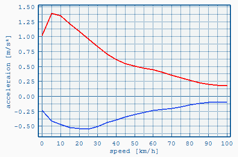

The file is used for
Acceleration Limiting. It defines the acceleration and deceleration limits as function of vehicle speed. The filepath has to be defined in the
Job File.

File Format
The file uses the
VECTO CSV format.
Format:
- Three columns
- One header line
- At least two lines with numeric values (below file header)
Columns:
| vehicle
speed [km/h] |
Max.
acceleration [m/s2] |
Max.
deceleration [m/s2] |
|---|
| ... |
... |
... |
| ... |
... |
... |